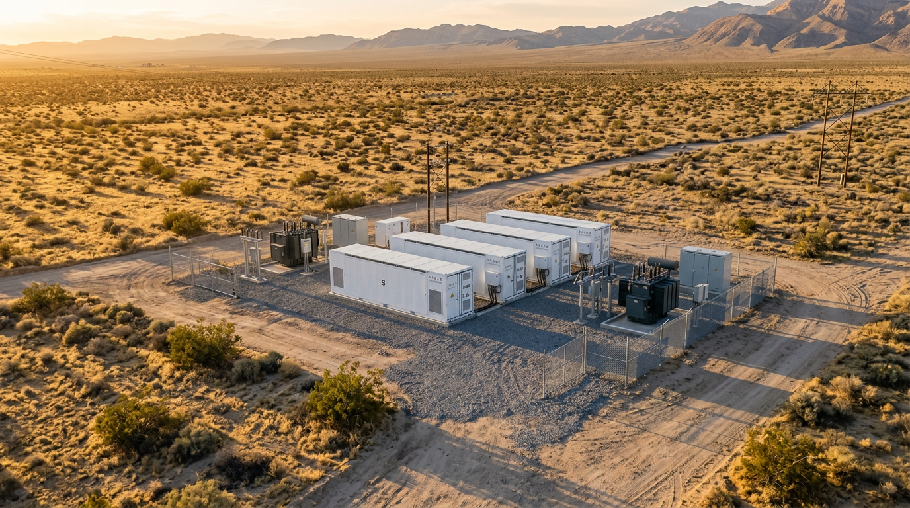
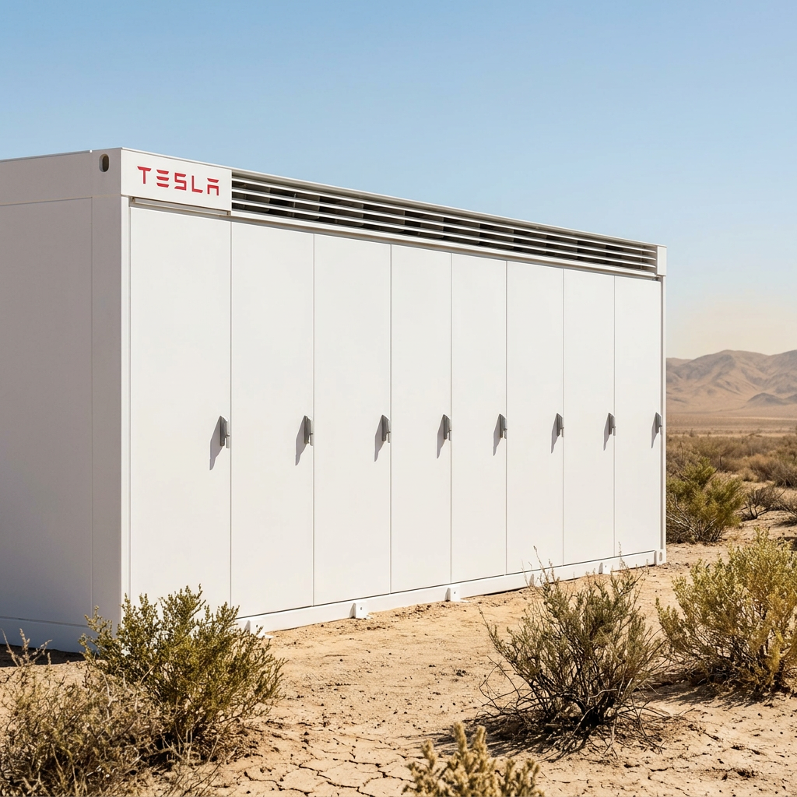

Battery Energy Storage • Interconnection Strategy • Grid-Integrated Development

⚡ Technical Overview
Rapid Energy Systems (RES) develops utility-scale battery energy storage systems (BESS) with a focus on distribution-level interconnection, grid stability, and scalable multi-asset sites. Our development model emphasizes engineering rigor, interconnection feasibility, and land control in high-value grid pockets across California.
⚡ Active Development Zone: Imperial Irrigation District (IID)
Calipatria BESS — 9.6 MW / 38 MWh (Under Development)

🧭 Technical Highlights
- Project Size: 9.6 MW / ~38 MWh
- Technology: Tesla Megapack 2 XL (or equivalent)
- Interconnection Target: IID 12 kV distribution feeder
- Land Position: 77-acre parcel under acquisition
- Feeder Proximity: Estimated 0.5–1.0 miles
- Interconnection Process: IID PAR submission planned during due-diligence
- Expansion Path: Transmission-level BESS (10–20 MW) and optional solar buildout
This site is engineered as a multi-project hub, enabling future grid assets beyond the initial BESS deployment.
⚡ Technical Capabilities
1. Interconnection Engineering
- Feeder headroom analysis
- POI identification and optimization
- Distribution vs. transmission cost modeling
- Protection scheme review
- Load pocket and stability assessment
- PAR and full interconnection application preparation
2. Site & Grid Modeling
- GIS-based feeder mapping
- Transmission adjacency evaluation
- Land suitability scoring
- BESS siting constraints (setbacks, access, thermal spacing)
- Multi-asset expansion modeling (solar + storage)
3. Project Execution
- OEM selection (Megapack 2 XL or equivalent)
- EPC coordination
- Civil + electrical layout design
- Permitting workflow
- Utility coordination
- NTP readiness package
⚡ Development Philosophy
RES focuses on mid-scale storage where:
Our approach minimizes risk and maximizes long-term grid value.
⚡ Technical Project Plan
Explore engineering notes, site evaluations, and development workflows:
Our approach minimizes risk and maximizes long-term grid value.
Rapid Systems
Irvine, California
Email: info@rapid-systems.net
Website: www.rapid-systems.net
© 2026 Rapid Systems. All rights reserved.